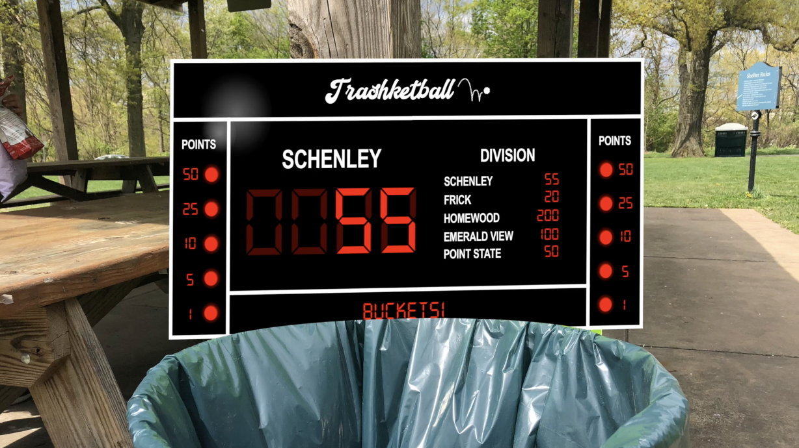

This was a brief project for Interaction Design Studio at CMU— we had 3 weeks to envision an IoT solution related to civic engagement & create a video about it. Enter: Trashketball, a gamified, sensor-enabled trash can that awards players points for correctly recycling waste in Pittsburgh's public parks.
Trashketball understands what's trash vs. recycling.
Trashketball knows what you're tossing in, creating a fun, educational experience that teaches users the difference between recyclable and non-recyclable materials.
It'll encourage you to play if you miss.
The sensor-enabled trashcan will chime if a user misses, beckoning them to try again. This gentle encouragement leverages positive reinforcement to increase engagement.
Players score more points from further distances, gamifying the concept.
The best part of Trashketball is that it isn't just a single player game— a whole group of people can get involved, competing against each other to see who can score the most points from further distances.
